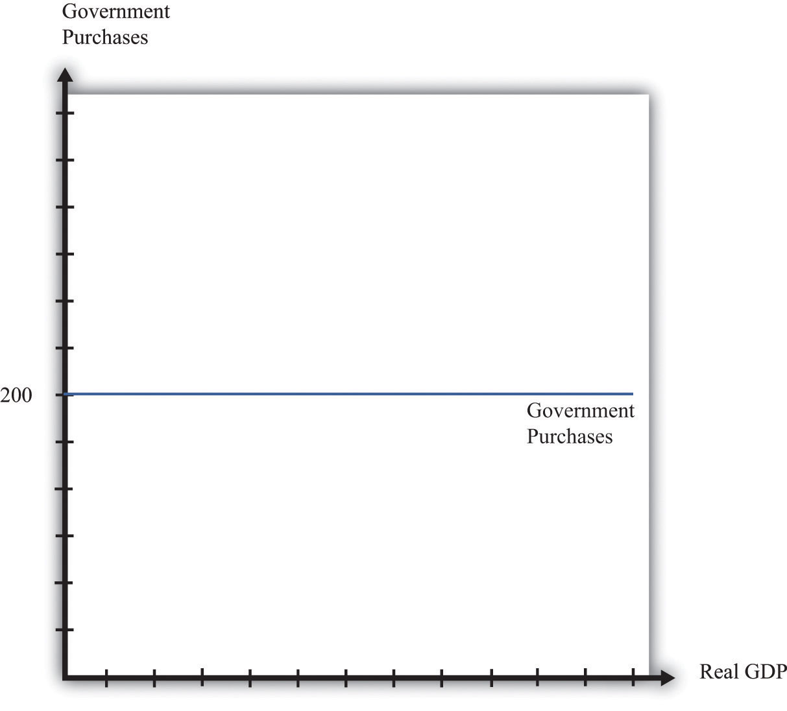
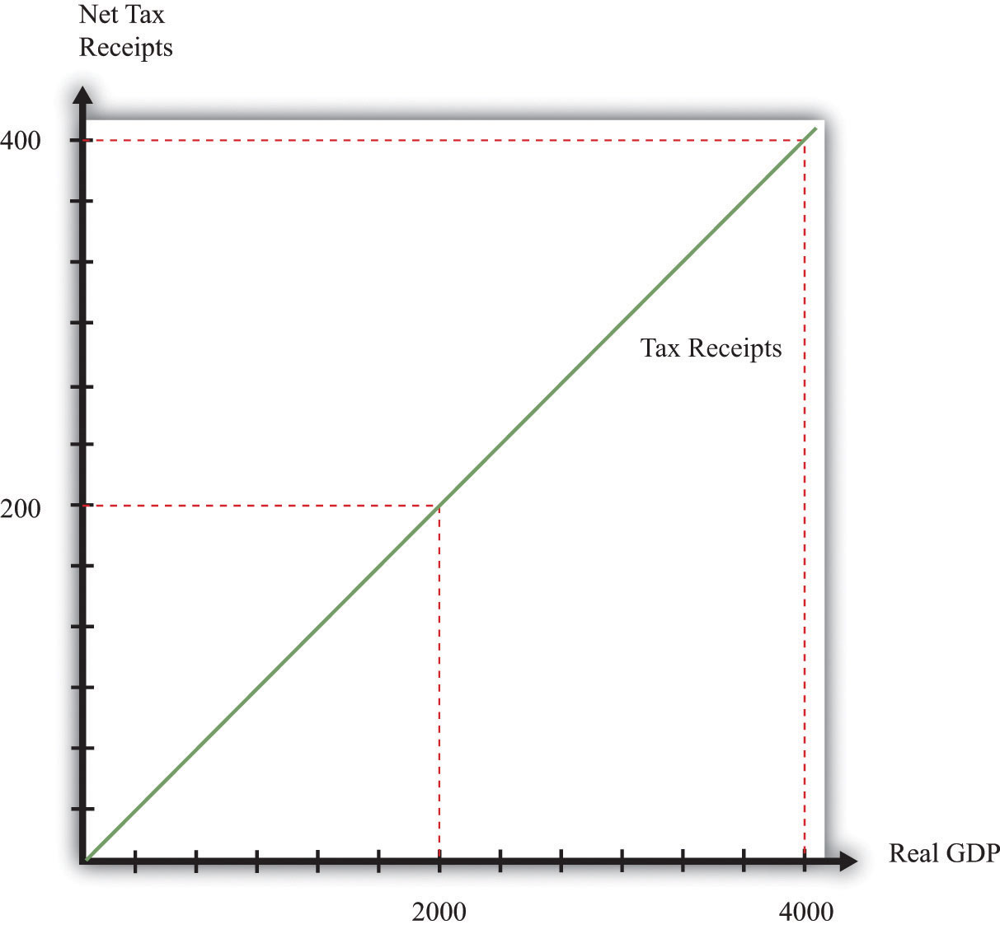
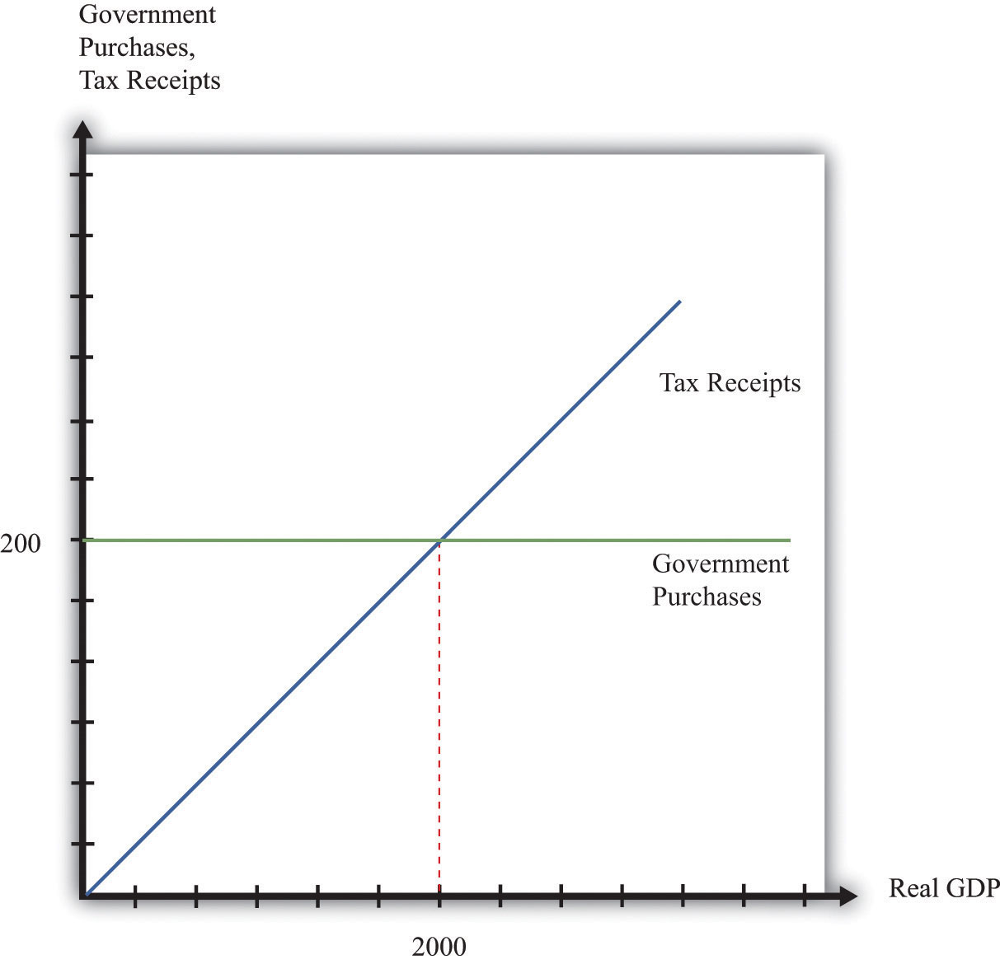
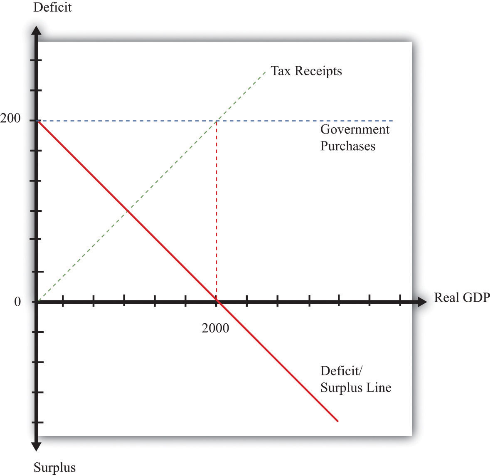
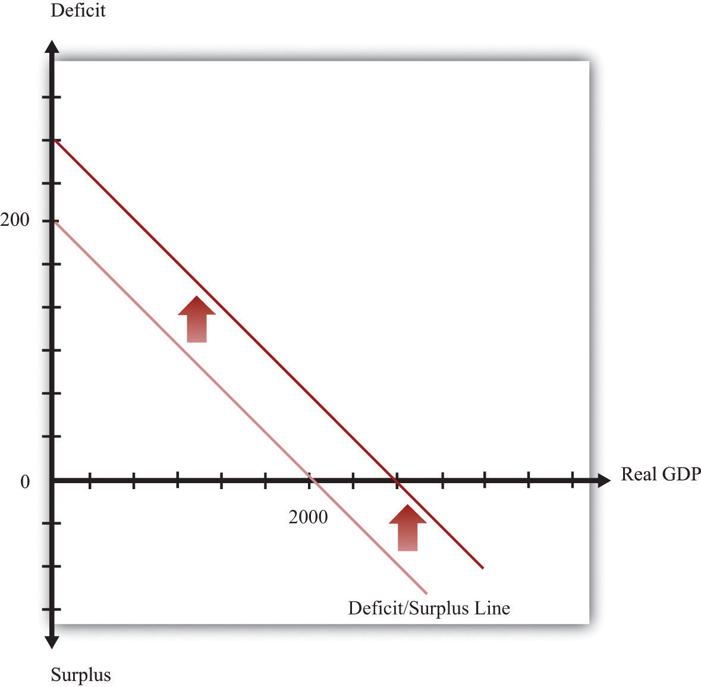
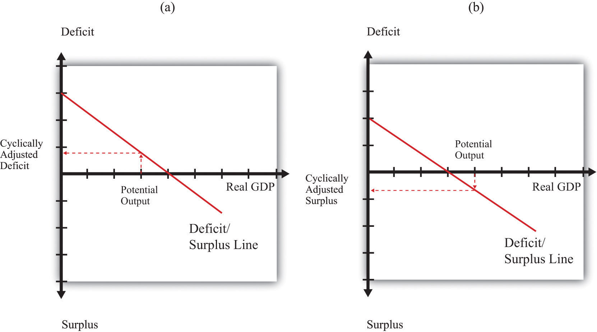
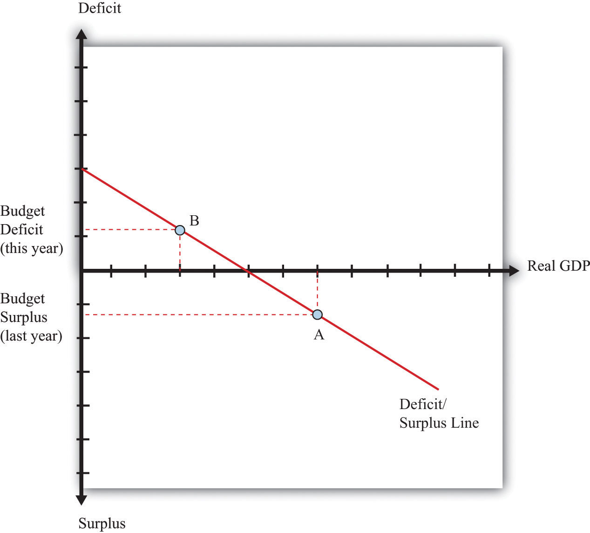
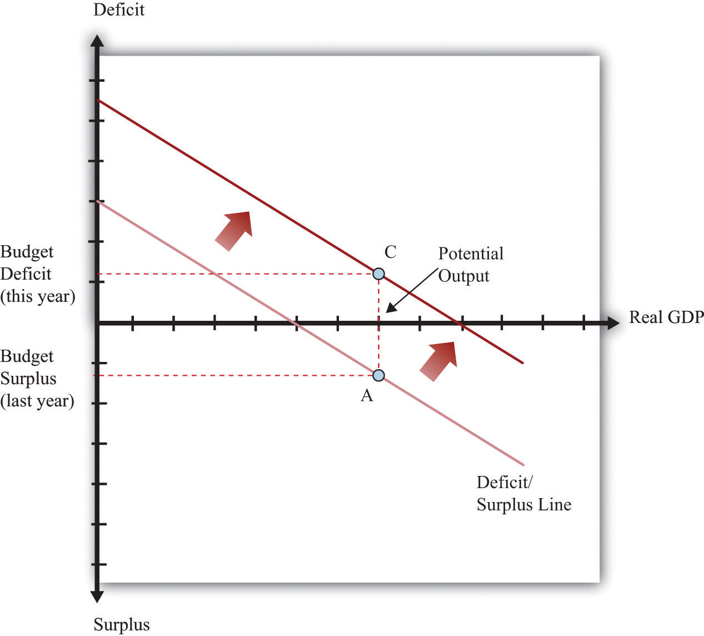
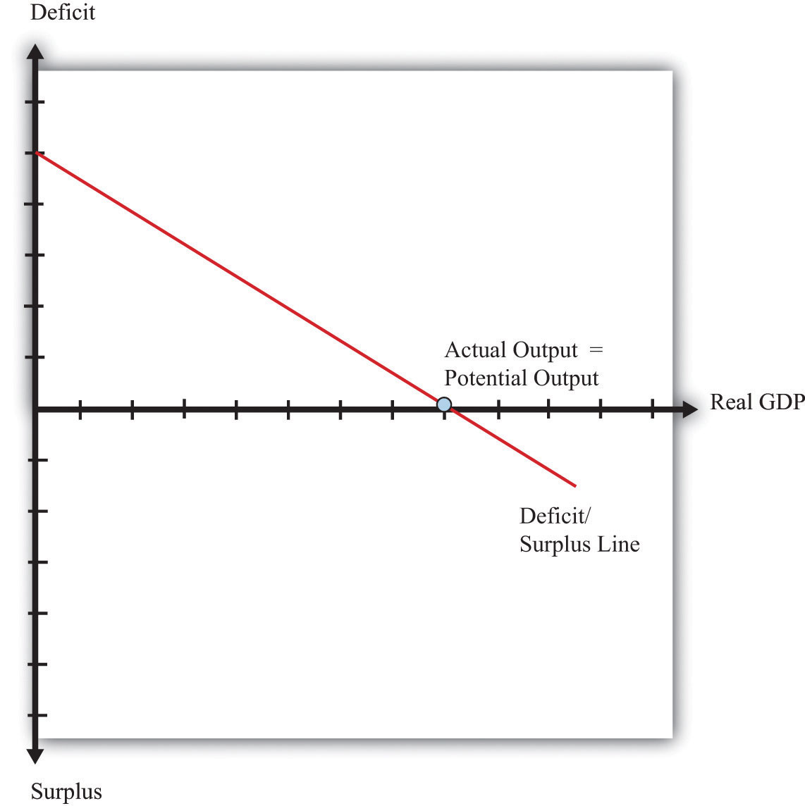
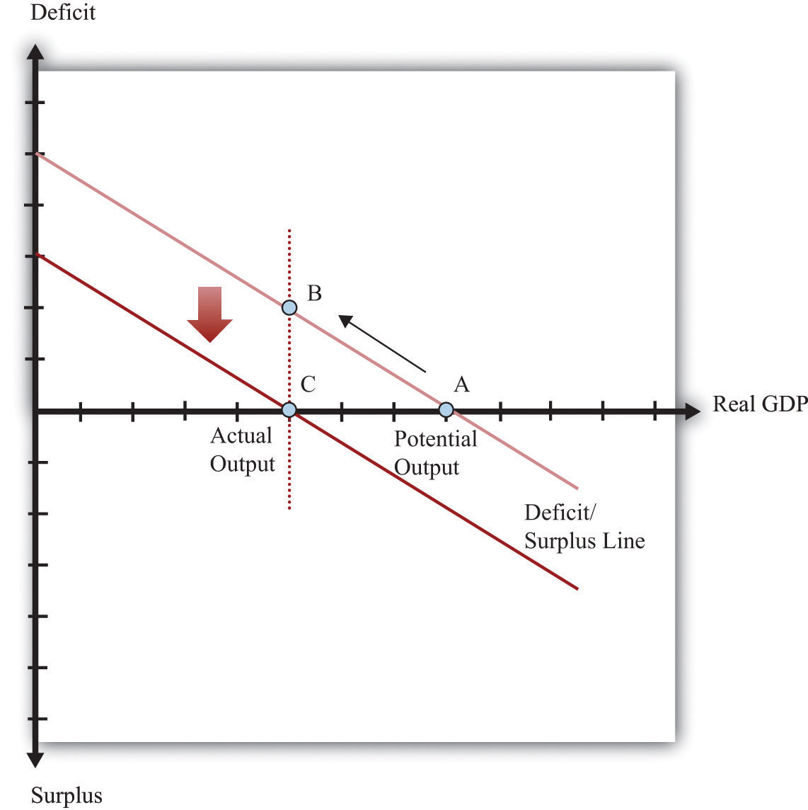

After you have read this section, you should be able to answer the following questions:
Now that we have defined budget deficits, budget surpluses, and the government debt, it is time to examine what determines these economic variables. The budget deficit reflects two forces: the stance of fiscal policy and the state of the economy.
Fiscal policyChanges in taxation and the level of government purchases, typically under the control of a country’s lawmakers. refers to the choice by the government of (1) its levels of spending on goods and services, (2) its transfers to households, and (3) the tax rates it sets on households and firms. Most countries have different levels of government, so some tax and spending decisions are made for the whole country, whereas others are made locally. In principle, we can include all levels of government in our discussion. This means that, in the United States, “government” can refer to the totality of local government, state government, and the federal government. In practice, though, it is the decisions of the federal government that have the main impact on the overall fiscal policy of the country. The same is true in other countries—local government decisions are not usually very important for the overall stance of fiscal policy.
There are two aspects of fiscal policy: government spending and tax/transfer policy. These fiscal policy choices determine the deficit.In other chapters we examine the effects of government spending on the aggregate economy. For example, Chapter 22 "The Great Depression" explained how changes in government spending can sometimes be used to stimulate the overall economy.
Over long periods of time, government spending increases as an economy gets richer. Over shorter periods of time, however, the level of government spending is not closely influenced by the overall level of economic activity. For this reason, we typically suppose that government spending is an exogenous variableA variable determined outside the model that is not explained in the analysis. that is determined “outside” our framework of analysis. We illustrate this in Figure 29.4 "Government Spending".
Figure 29.4 Government Spending
We suppose that government spending is independent of the level of gross domestic product (GDP), which means that it shows up as a horizontal line.
Our interest here is in deficits and the debt rather than the details of taxation, so we take a very simple approach to taxation. We assume that there is a constant tax rate that applies to all levels of income and abstract away from all the other complexities of the tax schedule. This view of the tax and transfer system is summarized by the following equation:
net taxes = tax rate × income.We illustrate this relationship in Figure 29.5 "The Tax Function". The slope of the line is the tax rate. In other words, for every dollar increase in income, net tax receipts increase by the amount of the tax rate.
Figure 29.5 The Tax Function
Net tax receipts depend on the state of the economy. When income is higher, the government collects more in taxes and pays out less in transfers.
Taxes depend positively on income because of the way the tax code is written. Conversely, transfers (such as unemployment insurance or Medicare payments) tend to depend negatively on income: when people are richer, they are less likely to need transfers from the government. The tax rate in the figure captures the overall effect: higher income increases net tax revenues both because people pay more taxes and because they receive fewer transfers.
Table 29.7 "Tax Receipts and Income" provides an example of tax receipts at different levels of income, when the tax rate is 10 percent. At the level of an individual household, taxes increase and transfers decrease as the household’s income increases. At the level of the entire economy, exactly the same thing is true. As real GDP increases, tax receipts increase and transfers decrease. Increased income, holding the tax rate fixed, leads to increased tax receipts. At the same time, increases in the tax rate lead to higher tax receipts at each level of income. Thus there are two factors determining tax receipts in the economy: the tax rate and the overall level of economic activity.
Table 29.7 Tax Receipts and Income
| Income | Tax Rate | Tax Receipts |
|---|---|---|
| 0 | 0.1 | 0 |
| 100 | 0.1 | 10 |
| 500 | 0.1 | 50 |
| 1,000 | 0.1 | 100 |
| 2,000 | 0.1 | 200 |
| 5,000 | 0.1 | 500 |
As the level of economic activity—real GDP—increases, the tax receipts of the government also increase. To determine the deficit, we need to know both the current fiscal policy (as summarized by the level of government purchases and the tax rate) and the level of economic activity. Building on the example in Table 29.7 "Tax Receipts and Income", suppose that government purchases are 200 and the tax rate is 10 percent. The relationship between the level of economic activity (GDP) and the deficit is given in Table 29.8 "Deficit and Income". In this example, the level of GDP must reach 2,000 before the budget is in balance (Figure 29.6 "Government Spending and Tax Receipts").
Table 29.8 Deficit and Income
| GDP | Government Purchases | Tax Receipts | Deficit |
|---|---|---|---|
| 0 | 200 | 0 | 200 |
| 100 | 200 | 10 | 190 |
| 500 | 200 | 50 | 150 |
| 1,000 | 200 | 100 | 100 |
| 2,000 | 200 | 200 | 0 |
| 5,000 | 200 | 500 | −300 |
Figure 29.6 Government Spending and Tax Receipts
Tax receipts increase as income increases, whereas government spending is unaffected by the level of GDP.
The dependence of the deficit on real GDP and the stance of fiscal policy are summarized in Figure 29.7 "Deficit/Surplus and GDP", which graphs the numbers from Table 29.8 "Deficit and Income". The deficit/surplus is measured on the vertical axis, and real GDP is measured on the horizontal axis. The deficit/surplus line is drawn for a given tax rate. As real GDP increases, the deficit decreases. Thus the line in Figure 29.7 "Deficit/Surplus and GDP" has a negative slope.
Figure 29.7 Deficit/Surplus and GDP
The deficit equals government purchases minus net tax receipts. The deficit is positive when GDP is low, but the budget goes into surplus when GDP is sufficiently high.
The deficit/surplus is the difference between the level of government purchases and the level of receipts. There is a particular level of economic activity such that the budget is exactly in balance. In our example, this level of GDP is 2,000. The deficit is zero when income is 2,000 because that is the point at which government purchases equal tax revenues. For levels of income in excess of this level of GDP, the government budget is in surplus. In Figure 29.7 "Deficit/Surplus and GDP", we see that the budget deficit/surplus line crosses the horizontal axis when GDP is 2,000.
Increases in government purchases or reductions in the tax rate are examples of expansionary fiscal policyIncreases in government purchases or reductions in tax rates.. Decreases in government purchases or increases in the tax rate are called contractionary fiscal policyDecreases in government purchases or increases in tax rates.. Expansionary fiscal policy increases the deficit for a given level of real GDP. An increase in government spending shifts the deficit line upward, as shown in Figure 29.8 "Expansionary Fiscal Policy". With a decrease in the tax rate, by contrast, the intercept stays the same, but the line rotates upward. The effect is still to increase the deficit at all positive levels of income.
Figure 29.8 Expansionary Fiscal Policy
Expansionary fiscal policy causes the deficit to increase at all levels of income, so the deficit line shifts upward. This picture illustrates the case of an increase in government purchases.
Given that the deficit depends on both the level of real GDP and the stance of fiscal policy, it is useful to have a way to distinguish these two influences. Put differently, it is helpful to know if the deficit is large because of the level of economic activity or because of the choices of government spending and taxes. This distinction came to the forefront in the 2004 presidential election in the United States. One of the issues raised in the debates between President George W. Bush and Senator Kerry was how the forecasted surplus from 2000 turned into the massive deficits of 2004. Were the deficits caused by the state of the economy or the policy decisions undertaken by President George W. Bush? To answer such questions, we need to decompose changes in the deficit into changes due to fiscal policy and changes due to the level of economic activity.
The Congressional Budget Office (CBO; http://www.cbo.gov) produces a measure of the budget deficit, called the cyclically adjusted budget deficitThe difference between outlays and revenues calculated under the assumption that the economy is operating at potential GDP., for this purpose. The CBO first calculates a measure of potential outputThe amount of real GDP the economy produces when the labor market is in equilibrium and capital goods are not lying idle.—the level of GDP when the economy is at full employment. Then it calculates the outlays and revenues of the federal government under the assumption that the economy is operating at potential GDP. The deficit is calculated by subtracting revenues from outlays. For obvious reasons, the cyclically adjusted budget deficit is also sometimes called the full-employment deficit.“The Cyclically Adjusted and Standardized Budget Measures,” Congressional Budget Office, April 2008, accessed July 20, 2011, http://cbo.gov/ftpdocs/90xx/doc9074/StandBudgetTOC.2.1.htm.
Figure 29.9 "The Cyclically Adjusted Budget Deficit" illustrates this idea. We first calculate the level of potential output and then use the deficit line to tell us the cyclically adjusted budget deficit or surplus for the economy. The figure shows two possibilities. In the first case, there is a government deficit when actual output is equal to potential output. In the second case, there is a government surplus when output is equal to potential output. Of course, the practical calculations are somewhat trickier than this picture suggests, but the idea is straightforward.
Figure 29.9 The Cyclically Adjusted Budget Deficit
To determine the cyclically adjusted deficit or surplus in an economy, calculate the level of potential output and then use the deficit/surplus line to determine what the deficit or surplus would be at that level of output. In panel (a), the economy has a cyclically adjusted deficit, whereas in panel (b), it has a cyclically adjusted surplus.
Figure 29.10 "Cyclical Deficit" and Figure 29.11 "Structural Deficit" show that there are two distinct reasons why a government might go from surplus into deficit—as happened in 2002, for example. Suppose that, last year, the economy was at potential output and there was a cyclically adjusted surplus (point A). Now imagine that this year there is a government deficit. One possibility is that the economy went into recession, as in Figure 29.10 "Cyclical Deficit", point B. This is called a cyclical deficitA deficit that occurs when a government budget is in deficit because of the low level of real GDP. because it is due to the state of the business cycle. Another is that the stance of fiscal policy has changed—for example, because of an increase in government spending, as in Figure 29.11 "Structural Deficit", point C. The CBO calls this a standardized deficit (or structural deficit)A deficit that occurs when a government budget is in deficit because of expansionary fiscal policy..A key simplification in these pictures is that the level of potential GDP is independent of taxes and government spending. Chapter 27 "Income Taxes" explains why potential output itself might be affected by the tax code.
Figure 29.10 Cyclical Deficit
The economy went from surplus (A) to deficit (B) because of recession. Real GDP declines, tax receipts decrease, and the budget goes into deficit. The economy moves along the deficit/surplus line.
Figure 29.11 Structural Deficit
The economy went from surplus (A) to deficit (C) because of changes in fiscal policy. Real GDP does not change: it is at potential output in both cases. The deficit/surplus line shifts upward.
We have identified two factors that determine the size of the deficit: the stance of fiscal policy and the state of the economy. We can use this information to learn more about the effects of a balanced-budget amendment on the economy.
Suppose that the economy is at potential output. A balanced-budget requirement would say that the economy must be neither in surplus nor in deficit at this point. In other words, a balanced-budget requirement describes the overall stance of fiscal policy. The deficit/surplus line must be shifted to ensure that it passes through the horizontal axis at potential output, as shown in Figure 29.12 "Balanced-Budget Requirement".
Figure 29.12 Balanced-Budget Requirement
A balanced-budget requirement implies that the full-employment deficit/surplus must be zero. The deficit/surplus line must pass through zero when real GDP equals potential output.
Now suppose that, for some reason, the economy goes into recession. In Figure 29.13 "Recession with a Balanced-Budget Amendment", this means that output goes from potential output to some lower level. We know that this leads to a deficit, which is shown as a shift from point A to point B. Under a balanced-budget rule, the government is not allowed to let this situation persist. Instead the government must respond by increasing taxes or cutting spending, moving the economy from point B to point C. Similarly, if the economy went into a boom, this would tend to lead to a surplus. The government would be forced to cut taxes or increase spending to bring the budget back into balance. A balanced-budget amendment would force the government to conduct procyclical fiscal policy.In fact, the effects of a balanced-budget amendment would be even worse. The countercyclical fiscal policy would cause GDP to decrease even further, thus requiring even bigger cuts in spending or increases in taxes.
Figure 29.13 Recession with a Balanced-Budget Amendment
If the economy were to go into recession, a balanced-budget requirement would force the government to increase taxes or cut spending to bring the budget back into balance.